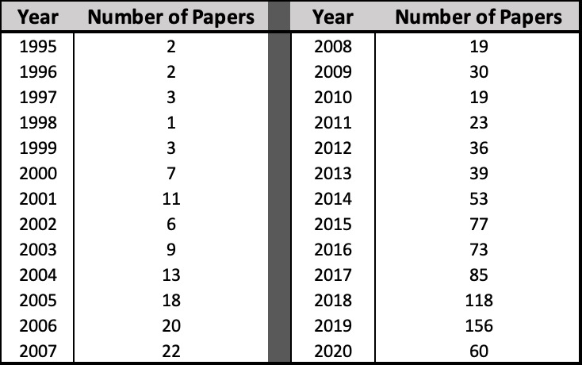
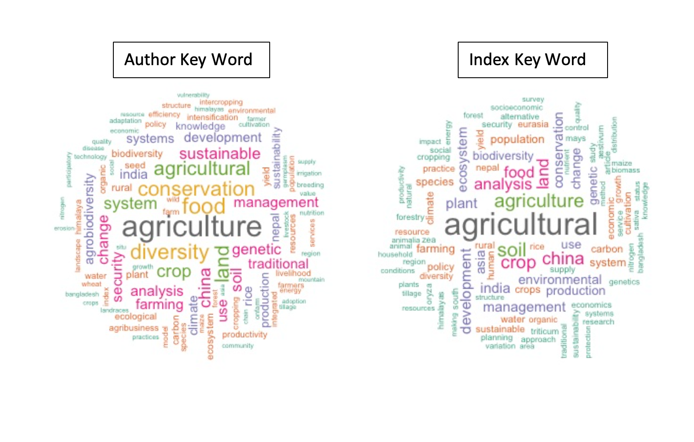
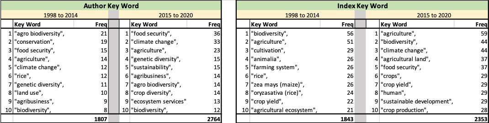

Last updated: 2020-06-02
Checks: 6 1
Knit directory: mom-ag_services/
This reproducible R Markdown analysis was created with workflowr (version 1.6.2). The Checks tab describes the reproducibility checks that were applied when the results were created. The Past versions tab lists the development history.
The R Markdown file has unstaged changes. To know which version of the R Markdown file created these results, you’ll want to first commit it to the Git repo. If you’re still working on the analysis, you can ignore this warning. When you’re finished, you can run wflow_publish to commit the R Markdown file and build the HTML.
Great job! The global environment was empty. Objects defined in the global environment can affect the analysis in your R Markdown file in unknown ways. For reproduciblity it’s best to always run the code in an empty environment.
The command set.seed(20200519) was run prior to running the code in the R Markdown file. Setting a seed ensures that any results that rely on randomness, e.g. subsampling or permutations, are reproducible.
Great job! Recording the operating system, R version, and package versions is critical for reproducibility.
Nice! There were no cached chunks for this analysis, so you can be confident that you successfully produced the results during this run.
Great job! Using relative paths to the files within your workflowr project makes it easier to run your code on other machines.
Great! You are using Git for version control. Tracking code development and connecting the code version to the results is critical for reproducibility.
The results in this page were generated with repository version 0fc1dc3. See the Past versions tab to see a history of the changes made to the R Markdown and HTML files.
Note that you need to be careful to ensure that all relevant files for the analysis have been committed to Git prior to generating the results (you can use wflow_publish or wflow_git_commit). workflowr only checks the R Markdown file, but you know if there are other scripts or data files that it depends on. Below is the status of the Git repository when the results were generated:
Ignored files:
Ignored: .RData
Ignored: .Rhistory
Ignored: .Rproj.user/
Ignored: analysis/.Rhistory
Ignored: code/.Rhistory
Untracked files:
Untracked: analysis/code_example.Rmd
Untracked: output/keyword-01_05.csv
Untracked: output/keyword-06_10.csv
Untracked: output/keyword-11_15.csv
Untracked: output/keyword-16_20.csv
Untracked: output/keyword-95_00.csv
Unstaged changes:
Modified: analysis/synthesis_HKH.Rmd
Modified: code/syn_3-combined.R
Note that any generated files, e.g. HTML, png, CSS, etc., are not included in this status report because it is ok for generated content to have uncommitted changes.
These are the previous versions of the repository in which changes were made to the R Markdown (analysis/synthesis_HKH.Rmd) and HTML (docs/synthesis_HKH.html) files. If you’ve configured a remote Git repository (see ?wflow_git_remote), click on the hyperlinks in the table below to view the files as they were in that past version.
| File | Version | Author | Date | Message |
|---|---|---|---|---|
| Rmd | d8b15ce | KaranSShakya | 2020-06-01 | hkh - table all |
| html | d8b15ce | KaranSShakya | 2020-06-01 | hkh - table all |
| Rmd | 9a12b5a | KaranSShakya | 2020-05-31 | Synthesis analysis - task 2 complete |
| html | 9a12b5a | KaranSShakya | 2020-05-31 | Synthesis analysis - task 2 complete |
| html | 37e8002 | KaranSShakya | 2020-05-30 | part 1 complete |
| Rmd | 5cf0632 | KaranSShakya | 2020-05-30 | word cloud fix |
| html | 5cf0632 | KaranSShakya | 2020-05-30 | word cloud fix |
| Rmd | eca107f | KaranSShakya | 2020-05-30 | wordcloud project |
| html | eca107f | KaranSShakya | 2020-05-30 | wordcloud project |
| Rmd | 53ac1ae | KaranSShakya | 2020-05-30 | first part submission - HKH |
| html | 53ac1ae | KaranSShakya | 2020-05-30 | first part submission - HKH |
| Rmd | 0f3b10f | KaranSShakya | 2020-05-30 | Creating new synthesis page |
| html | 0f3b10f | KaranSShakya | 2020-05-30 | Creating new synthesis page |
1. Summary Statistics by Year

This table shows how many papers were from the respective years.
It is important to note that a lot of papers are from 2015.
2. Summary Statistics by Country
| Country | Count | % of Total |
|---|---|---|
| Afghanistan | 2 | 0.2 |
| Bangladesh | 30 | 3.3 |
| Bhutan | 8 | 0.9 |
| China | 276 | 30.5 |
| HKH | 31 | 3.4 |
| India | 326 | 36.0 |
| Myanmar | 3 | 0.3 |
| Nepal | 80 | 8.8 |
| Others | 93 | 10.3 |
| Pakistan | 56 | 6.2 |
Word Clouds are interesting and useful visual tool that can be used to highlight key words. What a world cloud does is look into the frequency of key words. If a key word is used a lot, it will be bigger in the diagram. The following picture is a word cloud from both the Author’s Key Word and Index Key Word.
It is important to note, that for this word cloud key words with a space will be divided into two. In other words, “agricultural development” will be read as two different key word “agriculture” and “development”.
This is a good visual representation to use in informal setting like presentations, but not for academic writing.

Let’s say you want to answer the question How has the literature framework/priorities changed in the last five years?
These two tables can help highlight the change.

There is a lot to unpack from these two tables.
The bold number below is the total number of keywords. Both author and index had more total keywords between 2015-2020 than in papers from 1996-2014. This why I chose to compare the last 5 years.
In Author, but more clearly in Index, you can see an increase in climate change, food security, sustainable development, agribusiness, which does signal an increase in a more holistic approach to conducting research in the HKH (moving from a biological focus to a more socio-economic focus). It is always important to note that these tables do not prove that there is shift in focus, but simply highlights the trends in literature.